こちらの記事はＡＩ（Claude 4 Sonnet）で作成したものを一部加筆しています笑🍜✨
2024.12に食べました😄 今回は新しい沖縄そば屋を開拓しようと、普段通らない道を探索していたところ、北谷町北谷でお店を発見しました！沖縄の赤瓦屋根が美しい外観の「そば家鶴小（ちるぐゎー）北谷店」です✨
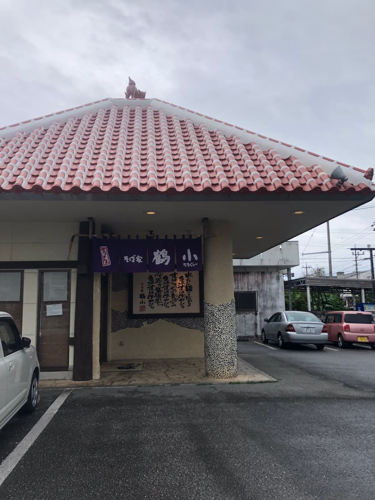
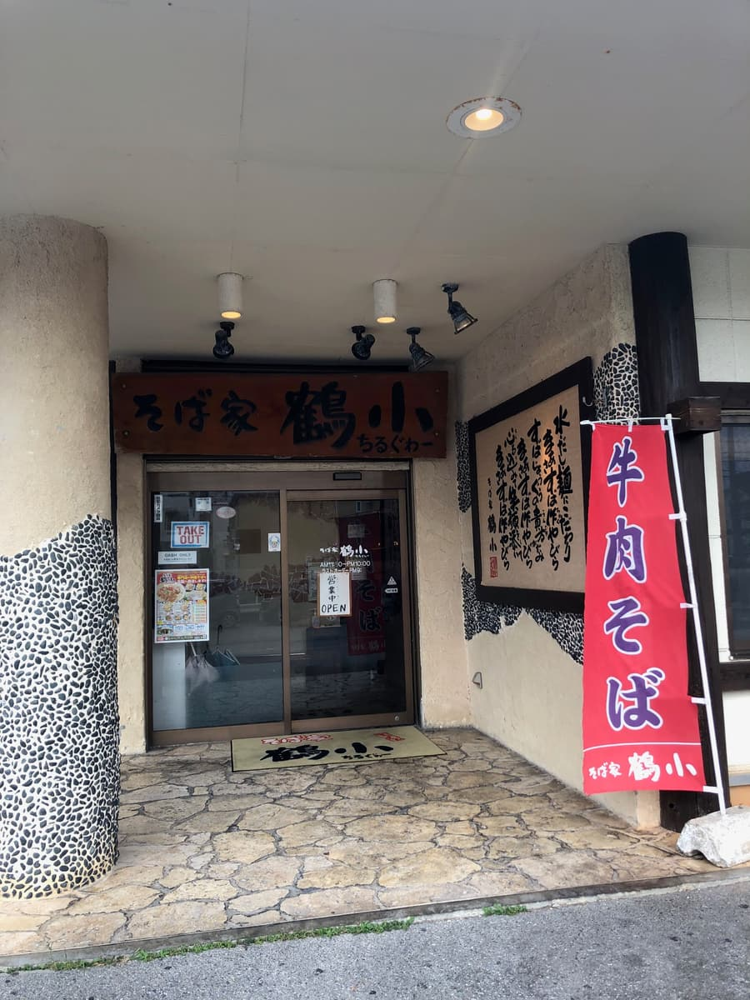
店内に入ると、沖縄の古民家風の内装で、とても落ち着いた雰囲気です。テーブルには沖縄らしい柄のメニューが置かれていて、見ているだけでもワクワクしますね🎵
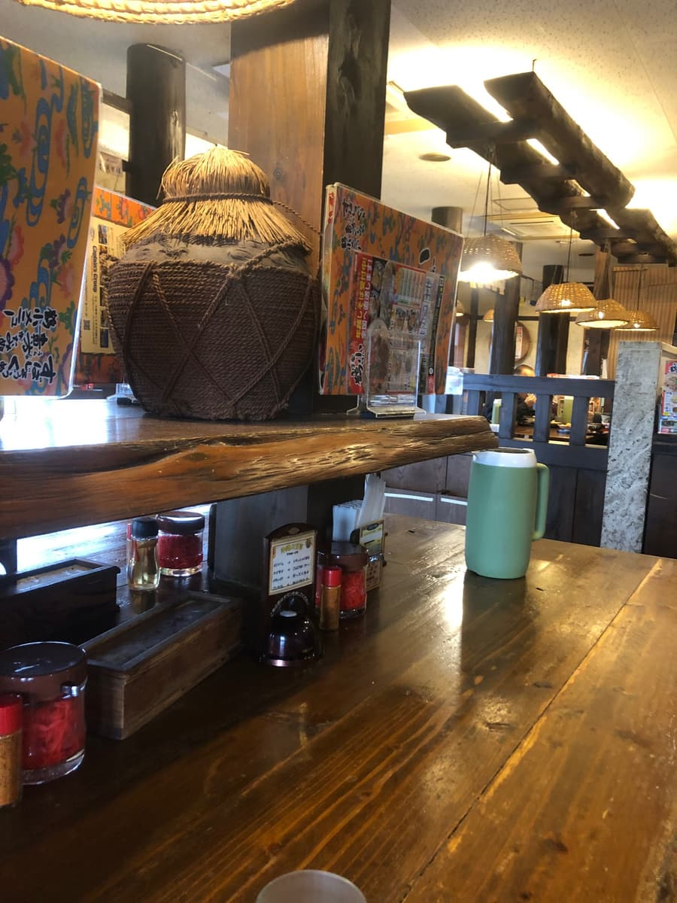
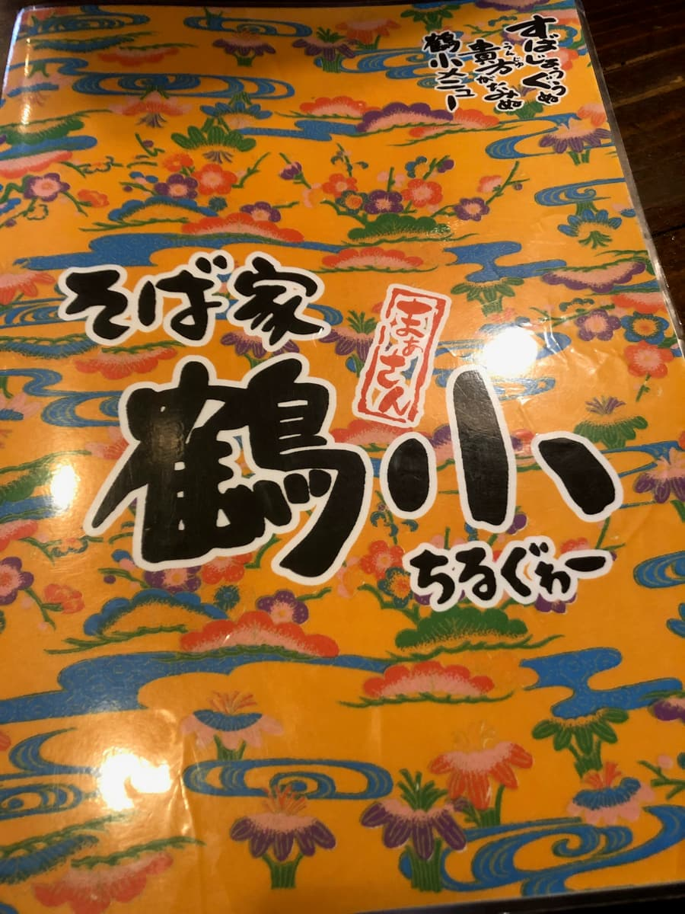
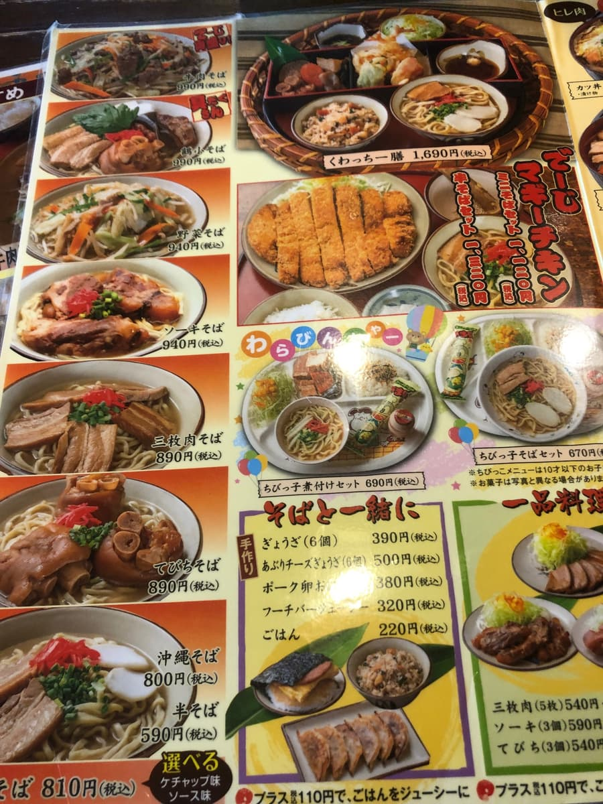
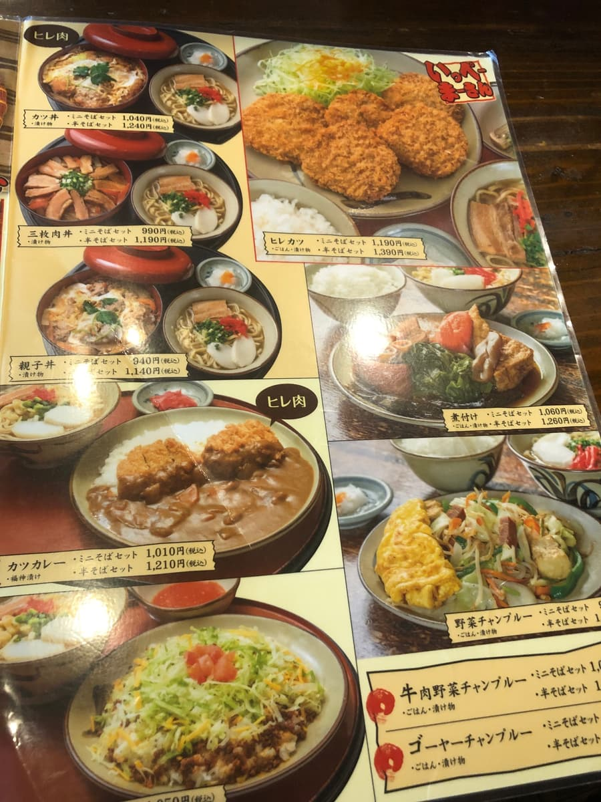
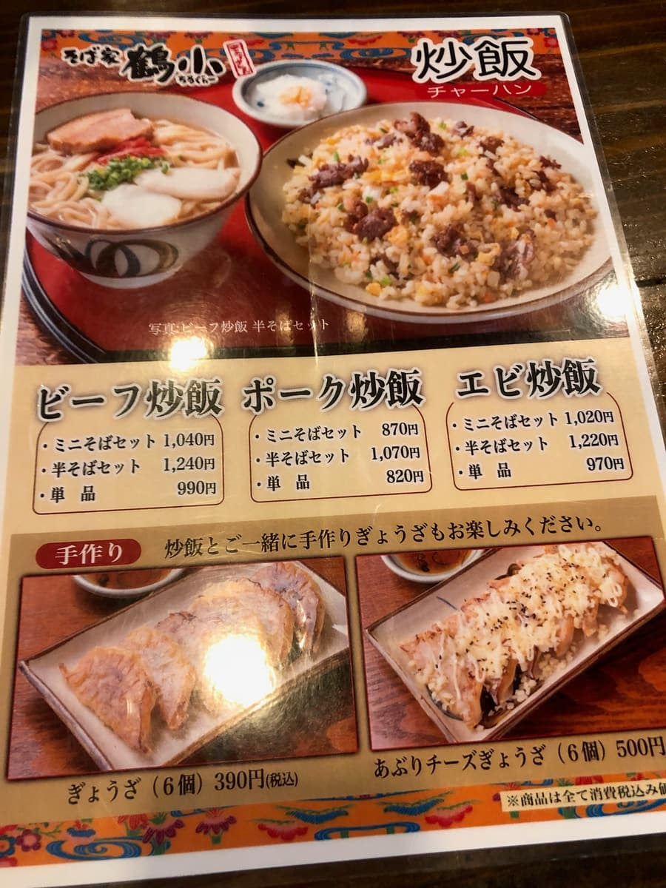
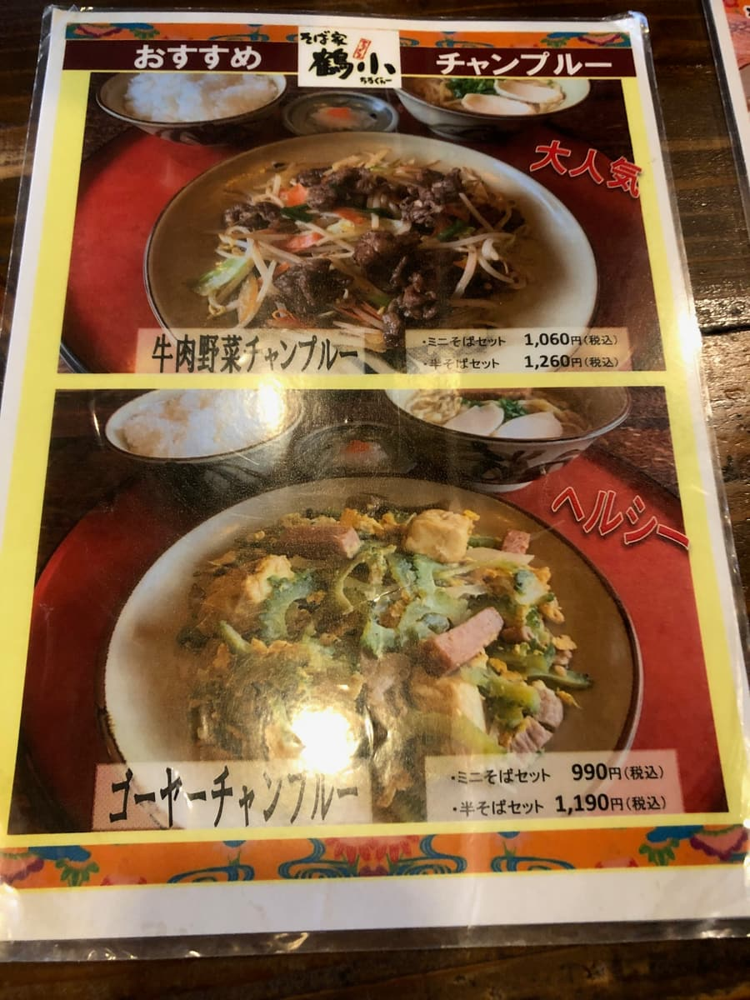
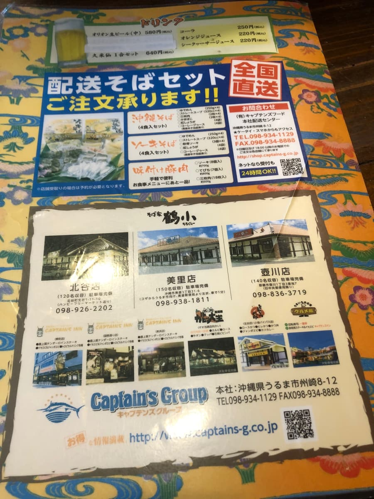
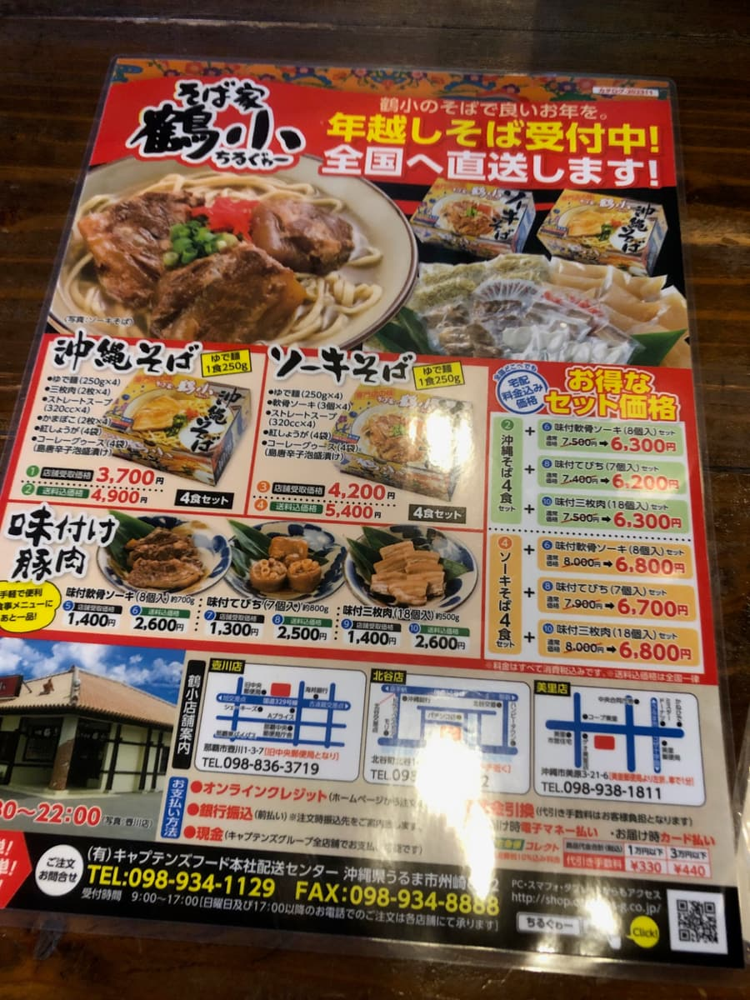
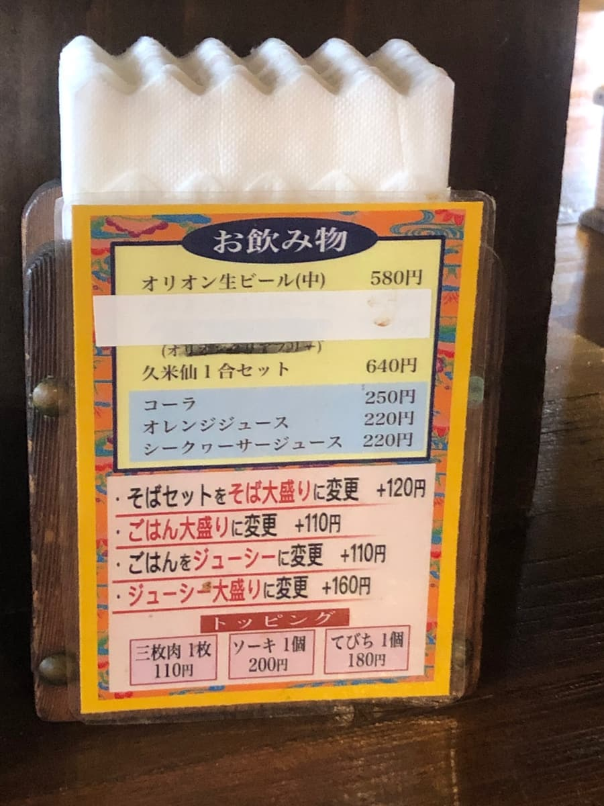
今回注文したのは「牛肉そば」です！沖縄そば屋で牛肉メニューというのは珍しく、前田食堂の牛肉そばを思い出しました。どんな味わいなのか期待が高まります🤤
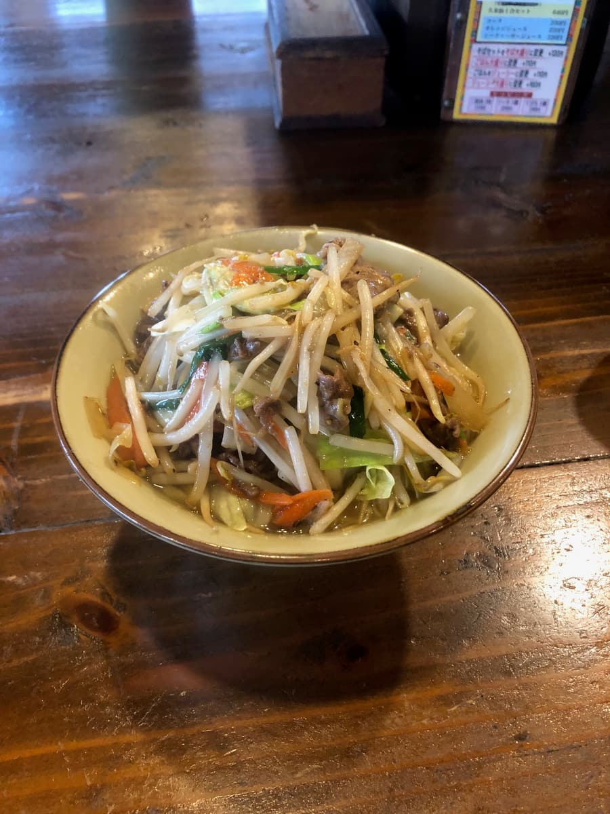
まずはスープからいただきます。豚骨ベースのスープに牛肉野菜炒めの出汁が混ざり合った味わいになっていますね。通常の沖縄そばとは一味違ったスープです😋
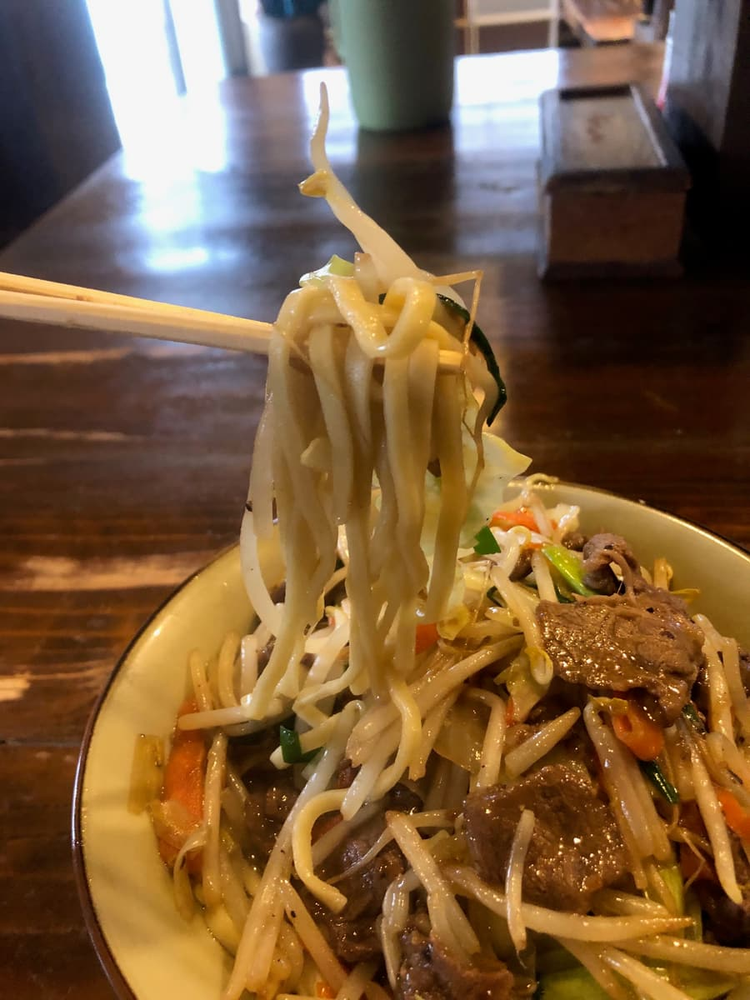
次に麺をいただきます。細麺のストレートタイプで、とても柔らかい食感です👍
そして今回の主役、牛肉野菜炒めです！たっぷりと盛られた牛肉と野菜は、見た目にもとてもボリューミーで食べ応えがありそうです。牛肉は柔らかく煮込まれていて、野菜もシャキシャキ感を残しながらしっかりと味が染み込んでいますね🥬
牛肉と野菜、麺を一緒に食べると、それぞれの食材の旨味が口の中で調和して、とても満足感のある一杯になっています。前田食堂の牛肉そばほどのボリュームはありませんが、十分にお腹いっぱいになる量ですね😊
評価（9点/15点）：普通に美味しい感じです。こちらのお店は北谷町という立地もあり、アメリカンビレッジからも近く、観光の合間に立ち寄るのにも便利な場所にあります。沖縄らしい古民家の雰囲気を味わいながら、牛肉そばを楽しめるのは魅力的ですね🏠 北谷エリアで沖縄そばを楽しみたい方、ぜひ一度足を運んでいただきたいお店ですね😄
麺 ：★★★☆☆（3）
スープ：★★★☆☆（3）
具 ：★★★☆☆（3）